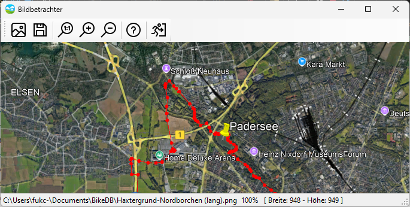

Bildbetrachter

Der Bildbetrachter kann bei allen Bildern über ein Kontextmenü mit der rechten Mouse-Taste direkt aufgerufen werden (also bei Fahrzeugen, Strecken, Städten etc.). Über das Bild-Icon oben links kann auch eine Bilddatei direkt geladen werden. Er verfügt über eine eigene Hilfe, die alle Mouse- und Tastaturbefehle aufzeigt.
Die wichtigste Funktion ist sicherlich, dass man die Bildgröße durch Hinein- oder Herauszoomen anpassen und direkt speichern kann, um so kleinere Dateien zu erzeugen, die dann im Bilderverzeichnis der BikeDB abgelegt werden können.